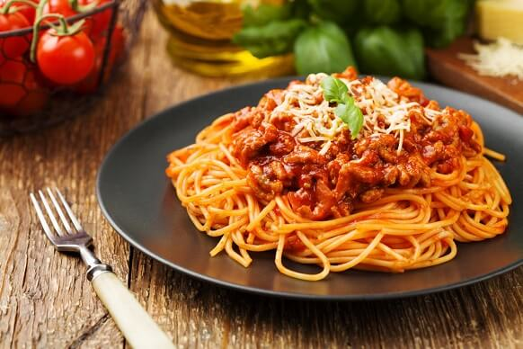

Spaghetti

Ingredients
- Beef
- Sauce
- Salt
- Pepper
- Tomato sauce
- Water
- Sugar
- Basil
- Oregano
- Garlic
- Pasta
Steps
- Ground beef - Brown the hamburger in a large pan.
Drain the fat if desired.
- Sauce - Throw in all sauce ingredients.
Simmer on low for 45 minutes to an hour.
- Pasta - Twenty minutes before the hour is up,
cook the box of spaghetti noodles as directed on the package.
Once the noodles are cooked, add them to the sauce and serve right away.